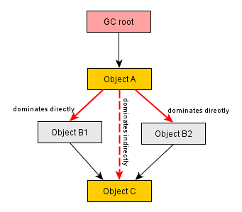

Heap Walker - Biggest Objects View |
 | The heap walker biggest objects view conforms to the basic layout of all heap walker views. Also see the help on key concepts for the entire heap walker. |
| |
The biggest objects view shows a list of the biggest objects in in the current object set.
The table shows the following information:
|
| |
Each object can be expanded to show outgoing references to other objects that are retained by this object.
In this way, you can recursively expand the tree of retained objects (also called a "dominator tree") that would be
garbage collected if the one of the parents were to be removed. The information displayed for each object in this tree
is similar to the outgoing reference view,
except that only dominating references are displayed.
Not all dominated objects are directly referenced by their dominators. For example, consider the references in the following figure:  Object A dominates objects B1 and B2, it does not have a direct reference to object C. Both B1 and B2 reference C. Neither B1 nor B2 dominates C, but A does. In this case, B1, B2 and C are listed as direct children of A in the dominator tree, and C will not be listed a child of B1 and B2. For B1 and B2, the field names in A by which they are held are displayed. For C, [transitive reference] is displayed on the reference node. At the left side of each reference node in this tree, a percentage bar shows how many percent of the retained size of the top-level object heap are still retained by the target object. The numbers will decrease as you drill down further into the tree. In the view settings, you can change the percentage base to the total heap size. The dominator tree has a built-in cutoff that eliminates all objects that have a retained size that is lower than 0.5% of the retained size of the parent object. This is to avoid excessively long lists of small dominated objects that distract from the important objects. If such a cutoff has been performed, a cutoff child node will be shown that notifies you about the number of objects that are not shown on this level, their total retained size and the maximum retained size of the single objects. |
| |
The view mode selector above the biggest objects view allows you to switch to
an alternate visualization: A tree map that shows all dominated objects as a set of nested rectangles.
Please see the help on tree maps for more information.
Each rectangle represents a dominated object. The area of the rectangle is proportional to its retained size. In contrast to the tree, the tree map gives you a flattened perspective of all leafs in the dominator tree. If you're mostly interested in big arrays, you can use the tree map in order to find them quickly without having to dig into the branches of the tree. Also, the tree map gives you an overall impression of the relative importance of dominated objects and the object size distribution in the heap. At the bottom right of the tree map you can see the total percentage of the entire heap that is represented by the tree map. If you have not zoomed in, the remaining part of the heap is dominated by objects that have not made it into the list of biggest objects due to the internal threshold for retained sizes. |
| | To analyze both incoming and outgoing references and to explore the relationship between objects of interest, use the [Show in graph] button at the top of the view. The selected instances will be then be added to the graph. The graph is not cleared when you choose a new object set or go back in the history, so you can add objects from different object sets to the graph. |
| |
If you're profiling in live mode with a 1.5 JVM or higher, the
[Show toString() values] button
at the top of the view is active. When you click it, JProfiler invokes toString() on all expanded
references in the view and shows the results. If you open more references or add more references with the
hyperlink at the bottom of the table, those objects will not have their toString() values
displayed. You will have to click the button again in order to show the missing values.
The reason why this operation is not performed automatically is that calculating toString() values is an expensive operation that invokes Java code in the profiled JVM and may even have unwanted side effects in buggy implementations. |
| |
To add a selection step from this view you can select one or more objects and
click the [Use selected] button above the table.
A new object set will be created that contains only the instances of the selected objects. After your selection, the view helper dialog will assist you in choosing the appropriate view for the new object set. |